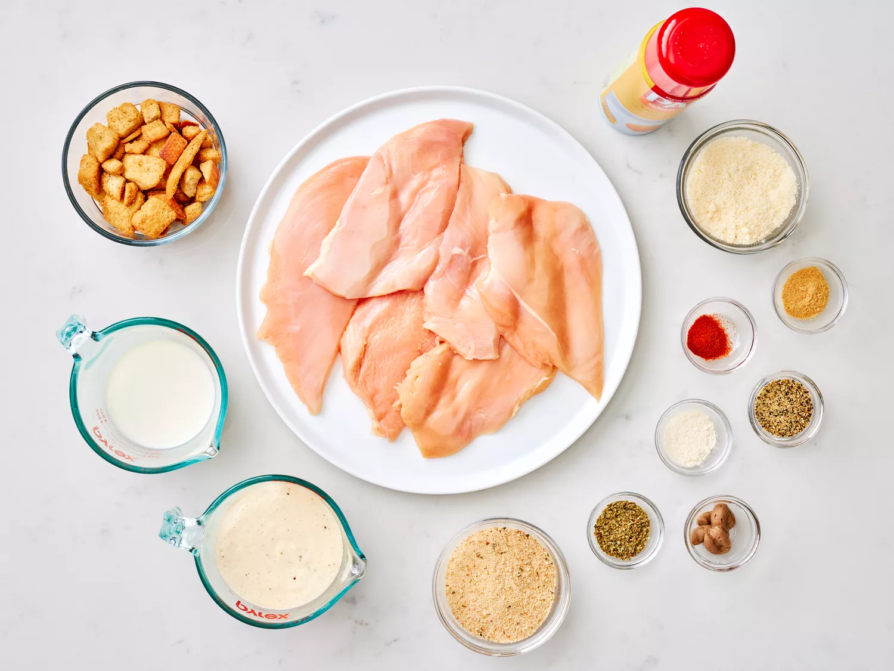
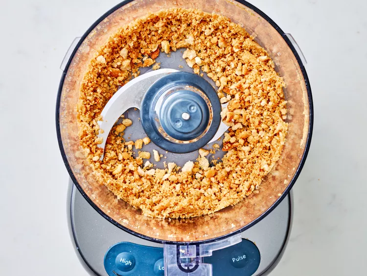
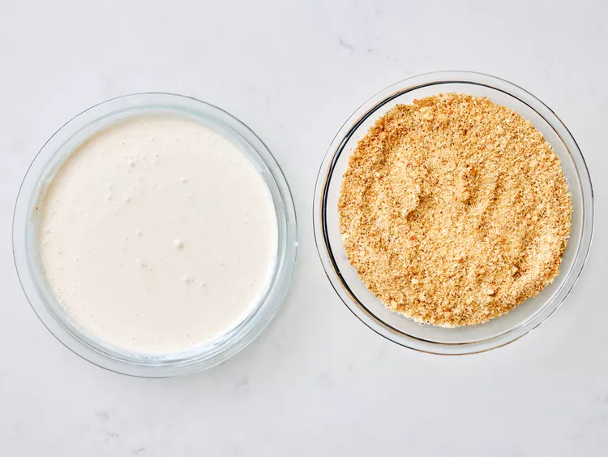
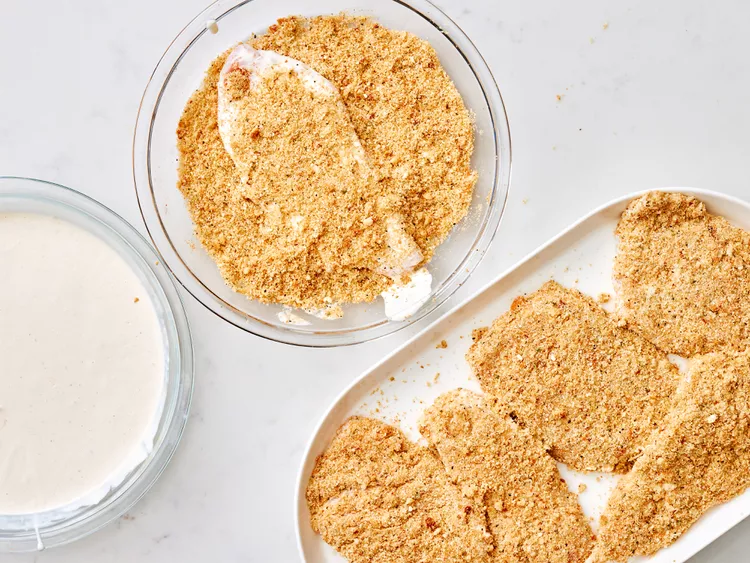
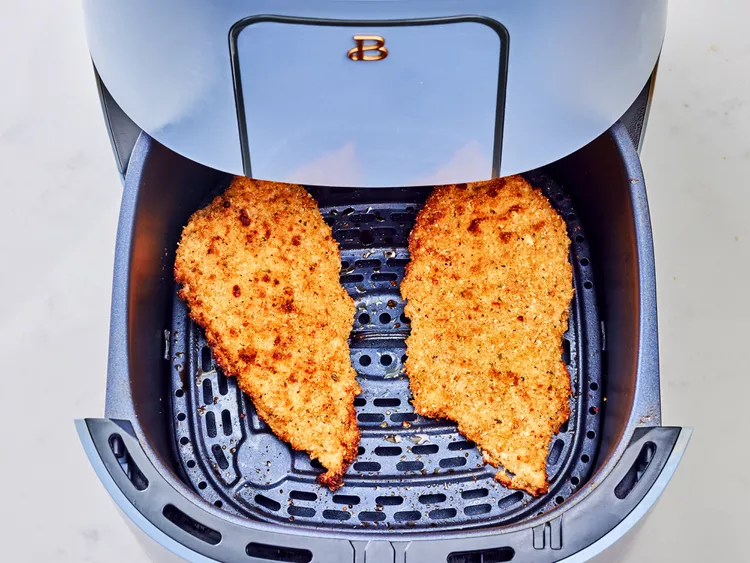
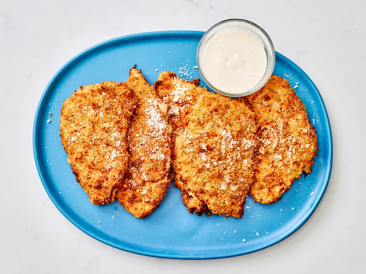

Crispy Caesar Chicken Cutlets offer a delightful fusion of golden-brown, breaded chicken with the bold flavors of Caesar dressing. Seasoned to perfection and pan-fried for a satisfying crunch, these cutlets provide a quick and delicious meal.
The savory taste of well-seasoned chicken harmonizes with the distinctive Caesar dressing, creating a mouthwatering experience. Perfect for a quick and tasty dinner, pair them with a salad or your preferred side for a satisfying culinary delight.
Gather all ingridients

Process Croutons in a food Processor until finely crumbled, about 8 pulses

Prepare dredging station. Stir together croutons, breadcrumbs, Parmesan cheese, lemon pepper, oregano, mustard, garlic powder, onion powder, and cayenne in a shallow bowl.
Whisk together Caesar dressing and milk until smooth in a separate shallow bowl. Set aside.

Preheat the air fryer to 390 degrees F for 2 minutes (200 degrees C).
Lightly coat the air fryer basket with cooking spray.
Working with 1 cutlet at a time, fully submerge each cutlet into dressing mixture, shaking off excess.
Dredge cutlets in crouton mixture, pressing firmly until evenly coated on both sides. Place on a plate in an even layer.

Working in batches, add 2 cutlets to basket in one even layer, and cook until
golden brown and cooked through, 10 to 12 minutes, flipping halfway through.

Transfer to a serving platter, and repeat with remaining cutlets. Serve with additional Parmesan cheese and dressing.
